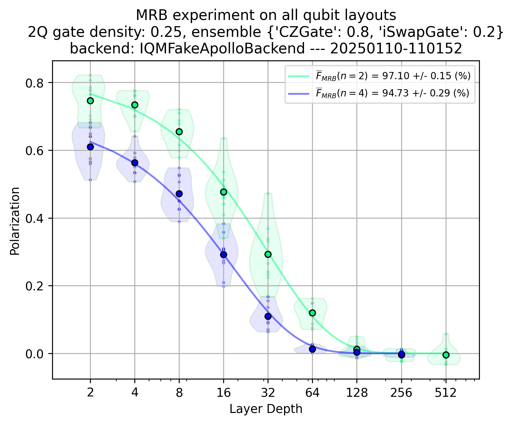

Mirror Randomized Benchmarking (MRB)#
%load_ext autoreload
%autoreload 2
Choose (or define) a backend#
#backend = "fakeadonis"
backend = "fakeapollo"
#backend = "garnet"
#backend = "deneb"
Set IQM Token if using Resonance.#
# import os
# os.environ["IQM_TOKEN"] = ""
Mirror RB Configuration#
from iqm.benchmarks.randomized_benchmarking.mirror_rb.mirror_rb import *
EXAMPLE_MRB = MirrorRBConfiguration(
qubits_array=[[0,1],
[0,1,3,4]],
#[0,1,3,4,8,9],
#[0,1,3,4,8,9,13,14],
# [0,1,3,4,8,9,13,14,17,18],
# [0,1,3,4,8,9,13,14,17,18,2,7],
# [0,1,3,4,8,9,13,14,17,18,2,7,5,10],
# [0,1,3,4,8,9,13,14,17,18,2,7,5,10,6,11]],
# [0,1,3,4,8,9,13,14,17,18,2,7,5,10,6,11,15,16],
# [0,1,3,4,8,9,13,14,17,18,2,7,5,10,6,11,15,16,12,19]],
depths_array=[[2**m for m in range(9)],
[2**m for m in range(8)]],
# [2**m for m in range(7)],
# [2**m for m in range(6)],
# [2**(m+1)-1 for m in range(6)],
# [2**(m+1)-1 for m in range(6)],
# [2**(m+1)-1 for m in range(5)],
# [2**(m+1)-1 for m in range(5)],
# [2**(m+1)-1 for m in range(4)],
# [2**(m+1)-1 for m in range(4)]],
# If only one list of depths is specified, it applies to all qubit layouts
# If less depths than qubit layouts is specified, the first one is applied
num_circuit_samples=10,
num_pauli_samples=5,
shots=2**8,
two_qubit_gate_ensemble={"CZGate": 0.8, "iSwapGate": 0.2}, # {GATE: PROBABILITY}
density_2q_gates=0.25,
calset_id=None,
)
Run the experiment#
benchmark_mrb = MirrorRandomizedBenchmarking(backend, EXAMPLE_MRB)
run_mrb = benchmark_mrb.run()
2025-01-10 11:01:52,545 - iqm.benchmarks.logging_config - INFO - Executing MRB on qubits [0, 1]. Will generate and submit all 10x5 MRB circuits for each depth [2, 4, 8, 16, 32, 64, 128, 256, 512]
2025-01-10 11:01:52,546 - iqm.benchmarks.logging_config - INFO - Depth 2 - Generating all circuits
2025-01-10 11:01:59,842 - iqm.benchmarks.logging_config - INFO - Submitting batch with 50 circuits corresponding to qubits [0, 1]
2025-01-10 11:01:59,849 - iqm.benchmarks.logging_config - INFO - Job for layout [0, 1] & depth 2 submitted successfully!
2025-01-10 11:01:59,892 - iqm.benchmarks.logging_config - INFO - Depth 4 - Generating all circuits
2025-01-10 11:02:06,947 - iqm.benchmarks.logging_config - INFO - Submitting batch with 50 circuits corresponding to qubits [0, 1]
2025-01-10 11:02:06,948 - iqm.benchmarks.logging_config - INFO - Job for layout [0, 1] & depth 4 submitted successfully!
2025-01-10 11:02:07,125 - iqm.benchmarks.logging_config - INFO - Depth 8 - Generating all circuits
2025-01-10 11:02:14,541 - iqm.benchmarks.logging_config - INFO - Submitting batch with 50 circuits corresponding to qubits [0, 1]
2025-01-10 11:02:14,542 - iqm.benchmarks.logging_config - INFO - Job for layout [0, 1] & depth 8 submitted successfully!
2025-01-10 11:02:14,626 - iqm.benchmarks.logging_config - INFO - Depth 16 - Generating all circuits
2025-01-10 11:02:22,589 - iqm.benchmarks.logging_config - INFO - Submitting batch with 50 circuits corresponding to qubits [0, 1]
2025-01-10 11:02:22,589 - iqm.benchmarks.logging_config - INFO - Job for layout [0, 1] & depth 16 submitted successfully!
2025-01-10 11:02:22,646 - iqm.benchmarks.logging_config - INFO - Depth 32 - Generating all circuits
2025-01-10 11:02:31,357 - iqm.benchmarks.logging_config - INFO - Submitting batch with 50 circuits corresponding to qubits [0, 1]
2025-01-10 11:02:31,357 - iqm.benchmarks.logging_config - INFO - Job for layout [0, 1] & depth 32 submitted successfully!
2025-01-10 11:02:31,413 - iqm.benchmarks.logging_config - INFO - Depth 64 - Generating all circuits
2025-01-10 11:02:41,596 - iqm.benchmarks.logging_config - INFO - Submitting batch with 50 circuits corresponding to qubits [0, 1]
2025-01-10 11:02:41,597 - iqm.benchmarks.logging_config - INFO - Job for layout [0, 1] & depth 64 submitted successfully!
2025-01-10 11:02:41,653 - iqm.benchmarks.logging_config - INFO - Depth 128 - Generating all circuits
2025-01-10 11:02:55,364 - iqm.benchmarks.logging_config - INFO - Submitting batch with 50 circuits corresponding to qubits [0, 1]
2025-01-10 11:02:55,365 - iqm.benchmarks.logging_config - INFO - Job for layout [0, 1] & depth 128 submitted successfully!
2025-01-10 11:02:55,428 - iqm.benchmarks.logging_config - INFO - Depth 256 - Generating all circuits
2025-01-10 11:03:15,702 - iqm.benchmarks.logging_config - INFO - Submitting batch with 50 circuits corresponding to qubits [0, 1]
2025-01-10 11:03:15,702 - iqm.benchmarks.logging_config - INFO - Job for layout [0, 1] & depth 256 submitted successfully!
2025-01-10 11:03:15,758 - iqm.benchmarks.logging_config - INFO - Depth 512 - Generating all circuits
2025-01-10 11:03:50,180 - iqm.benchmarks.logging_config - INFO - Submitting batch with 50 circuits corresponding to qubits [0, 1]
2025-01-10 11:03:50,181 - iqm.benchmarks.logging_config - INFO - Job for layout [0, 1] & depth 512 submitted successfully!
2025-01-10 11:03:50,244 - iqm.benchmarks.logging_config - INFO - Executing MRB on qubits [0, 1, 3, 4]. Will generate and submit all 10x5 MRB circuits for each depth [2, 4, 8, 16, 32, 64, 128, 256]
2025-01-10 11:03:50,301 - iqm.benchmarks.logging_config - INFO - Depth 2 - Generating all circuits
2025-01-10 11:04:01,940 - iqm.benchmarks.logging_config - INFO - Submitting batch with 50 circuits corresponding to qubits [0, 1, 3, 4]
2025-01-10 11:04:01,940 - iqm.benchmarks.logging_config - INFO - Job for layout [0, 1, 3, 4] & depth 2 submitted successfully!
2025-01-10 11:04:01,996 - iqm.benchmarks.logging_config - INFO - Depth 4 - Generating all circuits
2025-01-10 11:04:11,944 - iqm.benchmarks.logging_config - INFO - Submitting batch with 50 circuits corresponding to qubits [0, 1, 3, 4]
2025-01-10 11:04:11,945 - iqm.benchmarks.logging_config - INFO - Job for layout [0, 1, 3, 4] & depth 4 submitted successfully!
2025-01-10 11:04:11,970 - iqm.benchmarks.logging_config - INFO - Depth 8 - Generating all circuits
2025-01-10 11:04:22,330 - iqm.benchmarks.logging_config - INFO - Submitting batch with 50 circuits corresponding to qubits [0, 1, 3, 4]
2025-01-10 11:04:22,331 - iqm.benchmarks.logging_config - INFO - Job for layout [0, 1, 3, 4] & depth 8 submitted successfully!
2025-01-10 11:04:22,387 - iqm.benchmarks.logging_config - INFO - Depth 16 - Generating all circuits
2025-01-10 11:04:33,096 - iqm.benchmarks.logging_config - INFO - Submitting batch with 50 circuits corresponding to qubits [0, 1, 3, 4]
2025-01-10 11:04:33,096 - iqm.benchmarks.logging_config - INFO - Job for layout [0, 1, 3, 4] & depth 16 submitted successfully!
2025-01-10 11:04:33,152 - iqm.benchmarks.logging_config - INFO - Depth 32 - Generating all circuits
2025-01-10 11:04:45,609 - iqm.benchmarks.logging_config - INFO - Submitting batch with 50 circuits corresponding to qubits [0, 1, 3, 4]
2025-01-10 11:04:45,609 - iqm.benchmarks.logging_config - INFO - Job for layout [0, 1, 3, 4] & depth 32 submitted successfully!
2025-01-10 11:04:45,678 - iqm.benchmarks.logging_config - INFO - Depth 64 - Generating all circuits
2025-01-10 11:05:01,500 - iqm.benchmarks.logging_config - INFO - Submitting batch with 50 circuits corresponding to qubits [0, 1, 3, 4]
2025-01-10 11:05:01,500 - iqm.benchmarks.logging_config - INFO - Job for layout [0, 1, 3, 4] & depth 64 submitted successfully!
2025-01-10 11:05:01,557 - iqm.benchmarks.logging_config - INFO - Depth 128 - Generating all circuits
2025-01-10 11:05:23,819 - iqm.benchmarks.logging_config - INFO - Submitting batch with 50 circuits corresponding to qubits [0, 1, 3, 4]
2025-01-10 11:05:23,819 - iqm.benchmarks.logging_config - INFO - Job for layout [0, 1, 3, 4] & depth 128 submitted successfully!
2025-01-10 11:05:23,889 - iqm.benchmarks.logging_config - INFO - Depth 256 - Generating all circuits
2025-01-10 11:05:59,993 - iqm.benchmarks.logging_config - INFO - Submitting batch with 50 circuits corresponding to qubits [0, 1, 3, 4]
2025-01-10 11:05:59,993 - iqm.benchmarks.logging_config - INFO - Job for layout [0, 1, 3, 4] & depth 256 submitted successfully!
2025-01-10 11:06:00,050 - iqm.benchmarks.logging_config - INFO - Retrieving all counts for qubits_[0, 1]_depth_2
2025-01-10 11:06:00,119 - iqm.benchmarks.logging_config - INFO - Adding counts of qubits [0, 1] and depth 2 run to the dataset
2025-01-10 11:06:02,522 - iqm.benchmarks.logging_config - INFO - Retrieving all counts for qubits_[0, 1]_depth_4
2025-01-10 11:06:02,523 - iqm.benchmarks.logging_config - INFO - Adding counts of qubits [0, 1] and depth 4 run to the dataset
2025-01-10 11:06:02,598 - iqm.benchmarks.logging_config - INFO - Retrieving all counts for qubits_[0, 1]_depth_8
2025-01-10 11:06:02,598 - iqm.benchmarks.logging_config - INFO - Adding counts of qubits [0, 1] and depth 8 run to the dataset
2025-01-10 11:06:02,678 - iqm.benchmarks.logging_config - INFO - Retrieving all counts for qubits_[0, 1]_depth_16
2025-01-10 11:06:02,679 - iqm.benchmarks.logging_config - INFO - Adding counts of qubits [0, 1] and depth 16 run to the dataset
2025-01-10 11:06:02,766 - iqm.benchmarks.logging_config - INFO - Retrieving all counts for qubits_[0, 1]_depth_32
2025-01-10 11:06:02,767 - iqm.benchmarks.logging_config - INFO - Adding counts of qubits [0, 1] and depth 32 run to the dataset
2025-01-10 11:06:02,867 - iqm.benchmarks.logging_config - INFO - Retrieving all counts for qubits_[0, 1]_depth_64
2025-01-10 11:06:02,867 - iqm.benchmarks.logging_config - INFO - Adding counts of qubits [0, 1] and depth 64 run to the dataset
2025-01-10 11:06:02,982 - iqm.benchmarks.logging_config - INFO - Retrieving all counts for qubits_[0, 1]_depth_128
2025-01-10 11:06:02,983 - iqm.benchmarks.logging_config - INFO - Adding counts of qubits [0, 1] and depth 128 run to the dataset
2025-01-10 11:06:03,116 - iqm.benchmarks.logging_config - INFO - Retrieving all counts for qubits_[0, 1]_depth_256
2025-01-10 11:06:03,117 - iqm.benchmarks.logging_config - INFO - Adding counts of qubits [0, 1] and depth 256 run to the dataset
2025-01-10 11:06:03,271 - iqm.benchmarks.logging_config - INFO - Retrieving all counts for qubits_[0, 1]_depth_512
2025-01-10 11:06:03,272 - iqm.benchmarks.logging_config - INFO - Adding counts of qubits [0, 1] and depth 512 run to the dataset
2025-01-10 11:06:03,448 - iqm.benchmarks.logging_config - INFO - Retrieving all counts for qubits_[0, 1, 3, 4]_depth_2
2025-01-10 11:06:03,449 - iqm.benchmarks.logging_config - INFO - Adding counts of qubits [0, 1, 3, 4] and depth 2 run to the dataset
2025-01-10 11:06:03,651 - iqm.benchmarks.logging_config - INFO - Retrieving all counts for qubits_[0, 1, 3, 4]_depth_4
2025-01-10 11:06:03,652 - iqm.benchmarks.logging_config - INFO - Adding counts of qubits [0, 1, 3, 4] and depth 4 run to the dataset
2025-01-10 11:06:03,883 - iqm.benchmarks.logging_config - INFO - Retrieving all counts for qubits_[0, 1, 3, 4]_depth_8
2025-01-10 11:06:03,884 - iqm.benchmarks.logging_config - INFO - Adding counts of qubits [0, 1, 3, 4] and depth 8 run to the dataset
2025-01-10 11:06:04,149 - iqm.benchmarks.logging_config - INFO - Retrieving all counts for qubits_[0, 1, 3, 4]_depth_16
2025-01-10 11:06:04,150 - iqm.benchmarks.logging_config - INFO - Adding counts of qubits [0, 1, 3, 4] and depth 16 run to the dataset
2025-01-10 11:06:04,449 - iqm.benchmarks.logging_config - INFO - Retrieving all counts for qubits_[0, 1, 3, 4]_depth_32
2025-01-10 11:06:04,450 - iqm.benchmarks.logging_config - INFO - Adding counts of qubits [0, 1, 3, 4] and depth 32 run to the dataset
2025-01-10 11:06:04,790 - iqm.benchmarks.logging_config - INFO - Retrieving all counts for qubits_[0, 1, 3, 4]_depth_64
2025-01-10 11:06:04,791 - iqm.benchmarks.logging_config - INFO - Adding counts of qubits [0, 1, 3, 4] and depth 64 run to the dataset
2025-01-10 11:06:05,176 - iqm.benchmarks.logging_config - INFO - Retrieving all counts for qubits_[0, 1, 3, 4]_depth_128
2025-01-10 11:06:05,177 - iqm.benchmarks.logging_config - INFO - Adding counts of qubits [0, 1, 3, 4] and depth 128 run to the dataset
2025-01-10 11:06:05,605 - iqm.benchmarks.logging_config - INFO - Retrieving all counts for qubits_[0, 1, 3, 4]_depth_256
2025-01-10 11:06:05,606 - iqm.benchmarks.logging_config - INFO - Adding counts of qubits [0, 1, 3, 4] and depth 256 run to the dataset
2025-01-10 11:06:06,079 - iqm.benchmarks.logging_config - INFO - MRB experiment execution concluded !
Analyze the results#
result_mrb = benchmark_mrb.analyze()
2025-01-10 11:06:06,147 - iqm.benchmarks.logging_config - INFO - Post-processing MRB for qubits [0, 1]
2025-01-10 11:06:06,184 - iqm.benchmarks.logging_config - INFO - Depth 2
2025-01-10 11:06:06,184 - iqm.benchmarks.logging_config - INFO - Getting simulation counts
2025-01-10 11:06:06,264 - iqm.benchmarks.logging_config - INFO - Depth 4
2025-01-10 11:06:06,264 - iqm.benchmarks.logging_config - INFO - Getting simulation counts
2025-01-10 11:06:06,342 - iqm.benchmarks.logging_config - INFO - Depth 8
2025-01-10 11:06:06,343 - iqm.benchmarks.logging_config - INFO - Getting simulation counts
2025-01-10 11:06:06,422 - iqm.benchmarks.logging_config - INFO - Depth 16
2025-01-10 11:06:06,422 - iqm.benchmarks.logging_config - INFO - Getting simulation counts
2025-01-10 11:06:07,133 - iqm.benchmarks.logging_config - INFO - Depth 32
2025-01-10 11:06:07,134 - iqm.benchmarks.logging_config - INFO - Getting simulation counts
2025-01-10 11:06:07,214 - iqm.benchmarks.logging_config - INFO - Depth 64
2025-01-10 11:06:07,215 - iqm.benchmarks.logging_config - INFO - Getting simulation counts
2025-01-10 11:06:07,296 - iqm.benchmarks.logging_config - INFO - Depth 128
2025-01-10 11:06:07,296 - iqm.benchmarks.logging_config - INFO - Getting simulation counts
2025-01-10 11:06:07,375 - iqm.benchmarks.logging_config - INFO - Depth 256
2025-01-10 11:06:07,375 - iqm.benchmarks.logging_config - INFO - Getting simulation counts
2025-01-10 11:06:07,456 - iqm.benchmarks.logging_config - INFO - Depth 512
2025-01-10 11:06:07,456 - iqm.benchmarks.logging_config - INFO - Getting simulation counts
2025-01-10 11:06:07,529 - iqm.benchmarks.logging_config - INFO - Post-processing MRB for qubits [0, 1, 3, 4]
2025-01-10 11:06:07,569 - iqm.benchmarks.logging_config - INFO - Depth 2
2025-01-10 11:06:07,569 - iqm.benchmarks.logging_config - INFO - Getting simulation counts
2025-01-10 11:06:07,676 - iqm.benchmarks.logging_config - INFO - Depth 4
2025-01-10 11:06:07,676 - iqm.benchmarks.logging_config - INFO - Getting simulation counts
2025-01-10 11:06:07,780 - iqm.benchmarks.logging_config - INFO - Depth 8
2025-01-10 11:06:07,780 - iqm.benchmarks.logging_config - INFO - Getting simulation counts
2025-01-10 11:06:07,887 - iqm.benchmarks.logging_config - INFO - Depth 16
2025-01-10 11:06:07,887 - iqm.benchmarks.logging_config - INFO - Getting simulation counts
2025-01-10 11:06:07,993 - iqm.benchmarks.logging_config - INFO - Depth 32
2025-01-10 11:06:07,993 - iqm.benchmarks.logging_config - INFO - Getting simulation counts
2025-01-10 11:06:08,097 - iqm.benchmarks.logging_config - INFO - Depth 64
2025-01-10 11:06:08,097 - iqm.benchmarks.logging_config - INFO - Getting simulation counts
2025-01-10 11:06:08,201 - iqm.benchmarks.logging_config - INFO - Depth 128
2025-01-10 11:06:08,201 - iqm.benchmarks.logging_config - INFO - Getting simulation counts
2025-01-10 11:06:08,307 - iqm.benchmarks.logging_config - INFO - Depth 256
2025-01-10 11:06:08,307 - iqm.benchmarks.logging_config - INFO - Getting simulation counts
List all the keys in the attributes of the dataset#
attr_keys = sorted([str(x) for x in list(run_mrb.dataset.attrs.keys())])
for k in attr_keys:
print(k)
0
1
backend_configuration_name
backend_name
benchmark
calset_id
density_2q_gates
depths_array
execution_timestamp
max_gates_per_batch
num_circuit_samples
num_pauli_samples
physical_layout
qiskit_optim_level
qubits_array
routing_method
session_timestamp
shots
two_qubit_gate_ensemble
run_mrb.dataset.attrs[0]
{'qubits': [0, 1],
'depth_2': {'time_circuit_generation': 116.14302134513855,
'time_submit': 0.007565975189208984,
'time_retrieve': 0.06883907318115234,
'all_job_metadata': {'batch_job_1': {'job_id': 'f8d9d789-0e9a-4086-ab36-685064a7b66e',
'backend': 'aer_simulator',
'status': 'job has successfully run',
'circuits_in_batch': None,
'shots': None,
'timestamps': None}}},
'depth_4': {'time_circuit_generation': 116.14302134513855,
'time_submit': 0.0004930496215820312,
'time_retrieve': 0.0007040500640869141,
'all_job_metadata': {'batch_job_1': {'job_id': '87e367b7-c3ae-4457-8a2d-7b169c528033',
'backend': 'aer_simulator',
'status': 'job has successfully run',
'circuits_in_batch': None,
'shots': None,
'timestamps': None}}},
'depth_8': {'time_circuit_generation': 116.14302134513855,
'time_submit': 0.0004889965057373047,
'time_retrieve': 0.0005979537963867188,
'all_job_metadata': {'batch_job_1': {'job_id': 'd84330c9-101f-40ff-bea8-f5e4c0b41527',
'backend': 'aer_simulator',
'status': 'job has successfully run',
'circuits_in_batch': None,
'shots': None,
'timestamps': None}}},
'depth_16': {'time_circuit_generation': 116.14302134513855,
'time_submit': 0.0004627704620361328,
'time_retrieve': 0.0006148815155029297,
'all_job_metadata': {'batch_job_1': {'job_id': '1f58b4a0-fb16-4d12-a9e8-c9263da52418',
'backend': 'aer_simulator',
'status': 'job has successfully run',
'circuits_in_batch': None,
'shots': None,
'timestamps': None}}},
'depth_32': {'time_circuit_generation': 116.14302134513855,
'time_submit': 0.00047278404235839844,
'time_retrieve': 0.0005419254302978516,
'all_job_metadata': {'batch_job_1': {'job_id': '4e43834b-5694-4c6d-8a83-796913d67e40',
'backend': 'aer_simulator',
'status': 'job has successfully run',
'circuits_in_batch': None,
'shots': None,
'timestamps': None}}},
'depth_64': {'time_circuit_generation': 116.14302134513855,
'time_submit': 0.000469207763671875,
'time_retrieve': 0.0005609989166259766,
'all_job_metadata': {'batch_job_1': {'job_id': '036e1dde-ca95-42a1-ab68-30a243f6b4ba',
'backend': 'aer_simulator',
'status': 'job has successfully run',
'circuits_in_batch': None,
'shots': None,
'timestamps': None}}},
'depth_128': {'time_circuit_generation': 116.14302134513855,
'time_submit': 0.0004668235778808594,
'time_retrieve': 0.0005328655242919922,
'all_job_metadata': {'batch_job_1': {'job_id': '13a59ca8-2ab0-4de8-a643-5b3f318f03d4',
'backend': 'aer_simulator',
'status': 'job has successfully run',
'circuits_in_batch': None,
'shots': None,
'timestamps': None}}},
'depth_256': {'time_circuit_generation': 116.14302134513855,
'time_submit': 0.0004749298095703125,
'time_retrieve': 0.0006148815155029297,
'all_job_metadata': {'batch_job_1': {'job_id': 'e673defd-039c-4c37-9ef3-d4734436f39a',
'backend': 'aer_simulator',
'status': 'job has successfully run',
'circuits_in_batch': None,
'shots': None,
'timestamps': None}}},
'depth_512': {'time_circuit_generation': 116.14302134513855,
'time_submit': 0.0005099773406982422,
'time_retrieve': 0.0005548000335693359,
'all_job_metadata': {'batch_job_1': {'job_id': 'd83ac439-2929-4d78-b52b-f297873c3e44',
'backend': 'aer_simulator',
'status': 'job has successfully run',
'circuits_in_batch': None,
'shots': None,
'timestamps': None}}}}
The observation object contains the benchmark results#
result_mrb.observations
{0: {'avg_gate_fidelity': {'value': 0.9710221314803044,
'uncertainty': 0.001462493086363885}},
1: {'avg_gate_fidelity': {'value': 0.9473471466489307,
'uncertainty': 0.00285118172031131}}}
Generate plots#
for k in result_mrb.plots.keys():
print(k)
[0, 1]
[0, 1, 3, 4]
all_qubit_layouts
key_mrb_plot = "all_qubit_layouts"
result_mrb.plot(key_mrb_plot)
